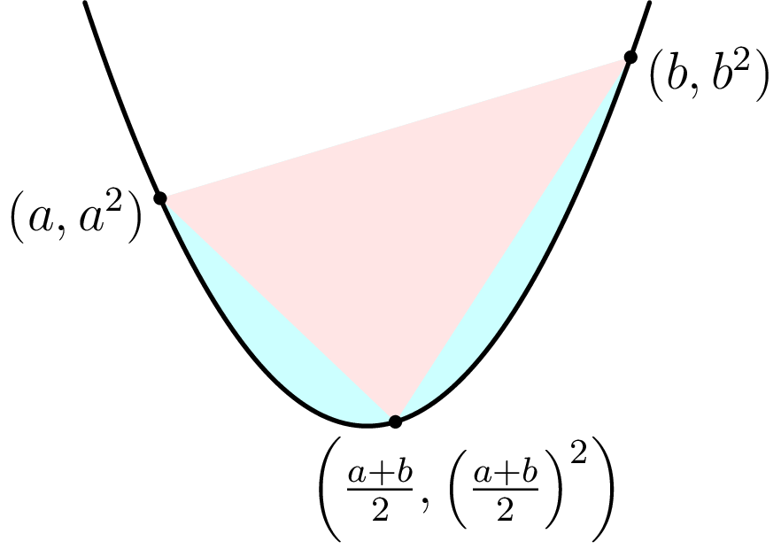
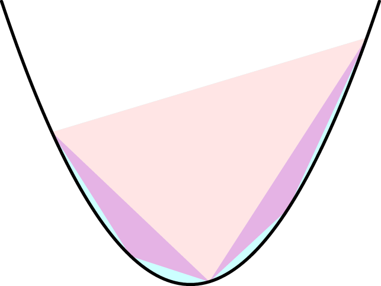

December 18th
Today I learned a proof for the fact that the area of a section of a parabola bounded by a line is $\frac43$ of the area of that section's midpoint triangle. Applying a suitable affine transformation, it suffices to prove this for the parabola $y=x^2.$ Here's the image of what we're talking about.
The assertion is that the red and blue areas is $\frac43$ times just the red area. The main idea of the proof is that will be able to subdivide the remaining blue areas into more midpoint triangles, indefinitely, eventually summing to the desired area.
To start off, let's compute the area of the given midpoint triangle. Translating the midpoint to $0,$ we want the area of the triangle with vertices on $\left(\frac{a-b}2,\frac{3a^2-2ab-b^2}4\right),$ $(0,0),$ and $\left(\frac{b-a}2,\frac{-a^2-2ab+3b^2}4\right).$ Using determinants, this signed area will come out to be\[\frac12\left(\frac{a-b}2\cdot\frac{3a^2-2ab-b^2}4-\frac{b-a}2\cdot\frac{-a^2-2ab+3b^2}4\right)=\frac{a-b}{16}\cdot2\left(a-b\right)^2=\frac18(a-b)^3.\]This expression comes out quite nicely, aside from the fact we might have to throw absolute values around the entire thing. Further, if we substitute in $\frac{a+b}2$ into $a,$ then this signed area looks like\[\frac18\left(b-\frac{a+b}2\right)^3=\frac18\cdot\frac18(b-a)^3,\]which is one-eighth of the area we just had.
Now we wave our hands. Fix $K=\frac18|a-b|^3$ be the area of our midpoint triangle. We continually subdivide the parabola into these midpoint triangles. Starting from $n=0,$ we claim inductively that on the $n$th subdivisions, we'll add $2^n$ triangles with area $\frac1{8^n}K.$ Of course this is true for $n=0,$ where we have one big midpoint triangle with area $K.$
Then suppose on the $n$th subdivision, we have $2^n$ triangles each with area $\frac1{8^n}K.$ These triangles are all closest to the edges of the parabola, so on the next midpoint subdivision, we add on a triangle to each of the "exposed'' sides. Here's an example, in purple.
Each of our triangles has $2$ exposed sides, so we add $2^{n+1}$ triangles. Further, these new triangles will have $\frac18$ the area of their parent, as stated earlier, which comes out to $\frac1{8^{n+1}}K.$
To finish, we sum over all the triangles summed in subdivisions and call that the actual area of the parabola. So our area sums to\[\sum_{n=0}^\infty\left(2^n\cdot\frac1{8^n}K\right)=K\sum_{n=0}^\infty\frac1{4^n}=K\cdot\frac1{1-\frac14}=\frac43K,\]which is what we wanted. To make that final summation rigorous would be very obnoxious. I think we could show that all points covered in each subdivision is in the parabola, and conversely, all points of the parabola live in one of the subdivisions. I won't do this here. Anyways, as a bonus, we can plug in our formula for $K$ to get the area is exactly $\frac16(a-b)^3$ for $y=x^2.$